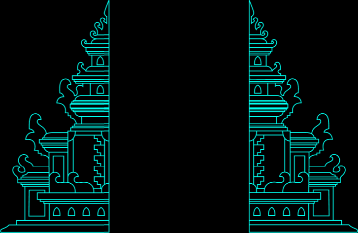
Edvin Joseph
Product, Bengaluru, India.
I'm moving into product after almost two years as a software developer at fast-moving startups. I loved taking part in product discussions and decisions, suggesting features and working out tradeoffs with producers, designers and artists.
I'm a computer engineer and a NextLeap product management fellow, and I want to work on the product side full time.
Experience
Sabit, founding developer
Since 2026. I build the whole app, from the reading timers to the backend.
Brightpoint Studios, associate software engineer
June 2024 to January 2026. I built features for Solitaire Castle Royal, including the global leaderboard, the lives system and a rewarded-ad loop. I translated the game into 6 languages and built tools so designers could make levels on their own.
NextLeap, product management fellow
Finished the fellowship in June 2026.
UPES, B.Tech in computer science
Studied graphics and game programming. Graduated in 2025.
Work
Stein
Stein is a deduction engine I'm building, a neuro-symbolic AI that arrives at answers systematically and deductively. It's useful when there needs to be absolute certainty about the answer, and it gets there through data collection and logic processing. It isn't public yet.
Logic grid puzzles
Stein got all 40 right against Claude Sonnet 5.5's 39.
MathConstraint problems
On 113 constraint problems Stein's latest answers are 111 right and none wrong. The other two were long searches stopped by hand. Sonnet got 106 right and 7 wrong.
Erdős problem #7
This open problem asks whether a covering system with distinct odd moduli exists. Stein proved that none exists when the least common multiple of the moduli is at most 10,394. It then independently confirmed a much stronger claim from a 2026 preprint that none exists below 11,486,475.
Date conversion
Every program that shows you a date has to turn a day number into a year, month and day. Stein was handed a reference that does this and asked for fast code. It found the constant 2939745, the same one Neri and Schneider published. Then it wrote x86-64 assembly and proved it right on all 4,294,967,296 32-bit inputs.
Character width in the Ghostty terminal
Ghostty looks up a character's width in a three-level table. Stein derived a two-level table with no branch and proved it equal to Ghostty's lookup on all 1,114,112 codepoints. It won a timed race at 6.32 ns against 6.81 ns per pair of calls.
Schur numbers, in the general loop
Color the integers 1 to N with k colors so that no color contains x, y and x + y. How large can N get? Given only that definition the loop proved the known answers for 1 to 4 colors (1, 4, 13 and 44).
Sabit
The only developer on Sabit, a Qur'an reading app that turns daily reading into a game. I'm part of almost every product discussion, and many of the app's core features started as my suggestions.
Flagged that the app we were drawing from probably had a timer you could cheat by changing the phone's clock, a tradeoff I'd seen at Brightpoint. It did. That decided how we built ours.
Built the app end to end: reading timers, rewards, a courtyard you decorate, levels, the backend and database, server-side content, localisation and Firebase Analytics.
Blinkit Unlock
People on Blinkit buy the same few things and hardly ever try another category. I tagged 6,072 reviews against a 30-label taxonomy and built a BM25 search tool to dig through them. Mostly it came down to habit. People don't buy what they don't usually buy. I prototyped an unlock that puts a nearby category in front of them between cart and delivery.
Discovery Copilot
Spotify users say their recommendations go stale. I built Signal, an AI tool to sort through their reviews, and underneath most of it was one complaint. They can't steer the algorithm. So I made an MVP that lets them.
A retro Windows-style theme for VS Code. 3,514 installs on the Marketplace.
AR at UPES
Led the Lens Studio work on a graduation lens that 200,000+ people used. Also led a team that built AR mini-games for a campus treasure hunt. It was picked among the best at SOCS Expo 2024.
India HCI 2023
India HCI is India's conference on human-computer interaction. The series began in 2004 and moves to a different city each year.
The 14th edition was hosted by the School of Design at UPES in Dehradun, on the theme HCI for Enabling Creativity. Keynotes came from Prof Janet Read, Prof Venkatesh Rajamanickam, Lawrence Lu and Dr Balvinder Singh.
I designed the logo, the badges and the website in dark and light versions. The stickers use old computer icons and were made to decorate the site.
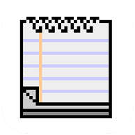
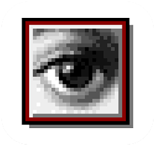
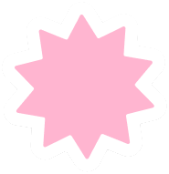
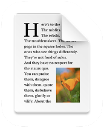
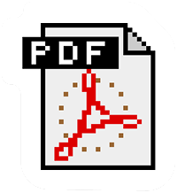
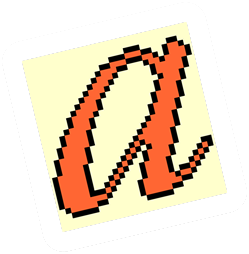
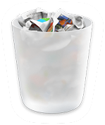
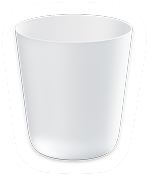
StreamX
A live-streaming app I designed for FrameX, a national hackathon at IIT BHU. It won third place. The final screens come first, then the wireframes.
Daac Metaworld
A team project that lets you walk on a simulated moon surface. We built a mechanical rig you stand in, a VR simulation and the headset setup. I designed the display the astronaut sees inside the helmet, including the line mandalas.
Twinbow
A voice chat app I designed as a personal project. Each conversation is a tile you can join and leave.
A redesign of the student portal at UPES, my university. It puts what students check every day on one dashboard.
Find Your True North
My first internship, at a career guidance startup. I designed the logo and the website, with a home page, a career quiz and a blog.
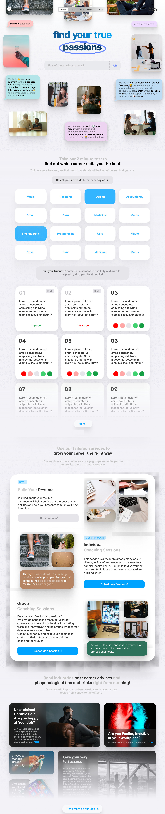
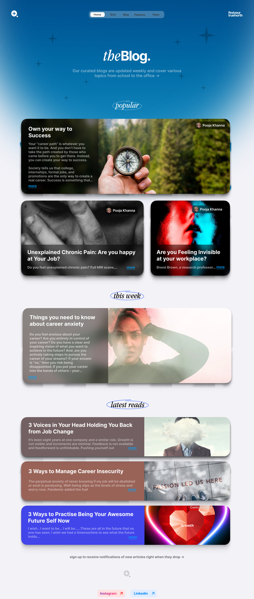
Poker
A concept for a dating app that deals you profiles like playing cards.
Let's talk type
A typography piece I built in Framer, on typeface vs font, classifications and the anatomy of type.